约 1469 个字 预计阅读时间 7 分钟
Chap 3 | “Inverted File Index”
章节启示录
本章节没有较难的内容，是“倒排索引”的介绍，涉及到的算法内容不多，以一些思路和概念为主。
1.倒排索引¶
1.1何为倒排索引¶
在介绍倒排索引之前，我们不妨看看正向的索引是怎么样的。
正向索引：当用户发起查询时（假设查询为一个关键词），搜索引擎会扫描索引库中的所有文档，找出所有包含关键词的文档，这样依次从文档中去查找是否含有关键词的方法叫做正向索引。但是这样就产生了很大的问题，互联网上包含这样那样的关键词的页面数不胜数，遍历搜索的效率将极其低下，无法满足用户的需求。
于是我们就开始思考如何加快索引的速度，倒排索引应运而生。倒排索引就是对于每一个单词，我们都记录它出现的位置（在哪个文件中），并将这些位置做成一串指针。
一个例子🌰
如下图所示，左边是文本集，右边则是倒排索引
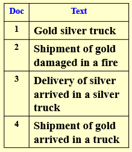 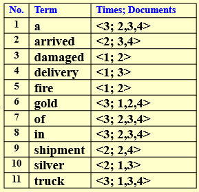
1.2一些改进¶
但仅仅如此，我们还不满意，课程中介绍了以下两个可以改进的地方（实际上应该有很多可以改进，而且应该有针对某一方面性能提升的“专用”搜索引擎）。
- 1.Word Stemming（词干分析）：只留下一个单词的词干或词根形式。比如我们将
process,processing,processes,processed这几个词都转换为process；还比如我们将says,said,saying这几个词都转换为say。类似的操作还有很多，但它的实现比较的暴力，就是堆case，判条件emmm……所以HW3的编程题如果不使用特定的库的话，还是非常折磨的…… - 2.Stop Words（停用词）：有些词汇它的出镜率太高了！比如
a,the,it，他们太想要表现自己了，但我们不喜欢太张扬的孩子，他们对实际的索引不起作用，因此我们把他们叫做停用词。对于停用词，我们就不需要存储啦。
1.3查找方式¶
我们目前已知的比较常见且好用的查找有如下两种：
- 1.Search trees( B- trees, B+ trees, Tries, ... )
- 2.Hashing
我们可以对这两种方式做一个对比，看看它们的优缺点（这是一个上课的思考题，以下是我们组讨论的结果）：
我们以Hash作为视角，以下的优缺点指的是Hash相对于Search tree而言。当然，对于Search tree 以下将是相反的
| 优点 | 缺点 |
|---|---|
| 一般来说（频繁地插入、删除和查找，并且数据量较大）效率更高 | 搜索成本较高 |
| 冲突解决方式（结构）灵活可变，可根据具体情况具体选择 | 无序，查找最大值最小值不方便 |
1.4存储方式¶
对于索引的存储也是很重要的（比如历史记录），提前存储也可以加快数据的搜索速度。此处也介绍两种存储方式：
- 1.Distributed indexing（分布式）：顾名思义，我们将数据“分块”地存储在不同的地方。因此选择如何分块就比较重要了。
字典序：按照字母顺序进行分块。"A~C" "D~F" ……
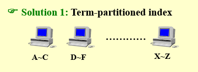
文档序：按照文档序列进行分块。"1~10000" "10001~20000" ……
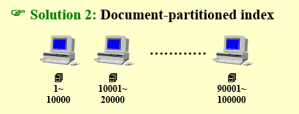 - 2.Dynamic indexing（动态）：我们将一块区域作为主存（用来存储比较稳定、比较频繁被利用的数据），而对于每小时每天新加入的数据，我们将其放在auxiliary index（辅助存储）中，之后再考虑其中数据的使用频率，将其适时更新到主存中。
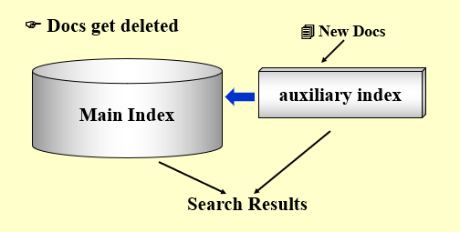
1.5评估标准¶
我们需要制定一个评估标准对搜索引擎的效果进行判定。
相关性测量
相关性测量需要考虑以下三个要素：
- 1.基准文档集合
- 2.基准查询集
- 3.对于每个查询-文档对,进行相关或不相关的二元评估
有了以上的条件，我们可以将一次搜索后的信息分为以下四类：相关的且搜索到的、相关的但未搜索到的、不相关的但搜索到的、不相关的且未搜索到的。
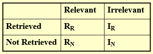
如果用维恩图表示它们之间的关系，将是这个样子：
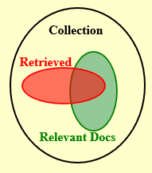
指标
- 1.\(Precision\)（准确率）： \(P=R_R/(R_R+I_R)\)
准确率表示在搜索到的信息中，相关的（用户想要的）信息的占比。 - 2.\(Recall\)（召回率）：\(R=R_R/(R_R+R_N)\)
召回率表示在相关的（用户想要的）信息中，搜索到的占比。
我们注意到，这两个指标都是\(\lt1\)的。最理想的情况当然是这两个值都趋近于\(1\)，但这显示是很难做到的，为此在实际应用中我们需要做一些trade-off，看看在什么情况下提高准确率，在什么情况下提高召回率。
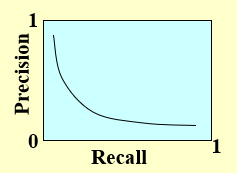
例如：在机场安检查询旅客有无携带违禁物品时，召回率显然要比准确率更加重要，因为我们需要尽可能多的知道携带违禁物品的人，而并不在乎我们寻找的人中违禁者的比例。
复习时的一些补充
有一个很大的坑（文字游戏英文版）
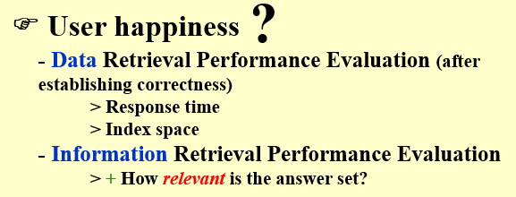
- Data Retrieval Performance Evaluation :是确定正确性后的评估标准。
1.Response time
2.Index space - Information Retrieval Performance Evaluation：
How relevant is the answer set?也就是利用上文提到的两个评估标准（准确率和召回率）。
所以这道题是错的。 When evaluating the performance of data retrieval, it is important to measure the relevancy of the answer set. F
-
Word stemming is to eliminate the commonly used words from the original documents.F
-
Thresholding
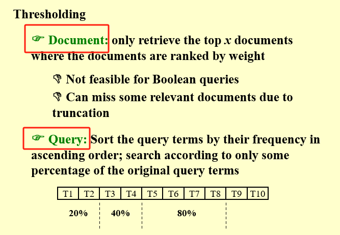
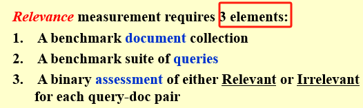